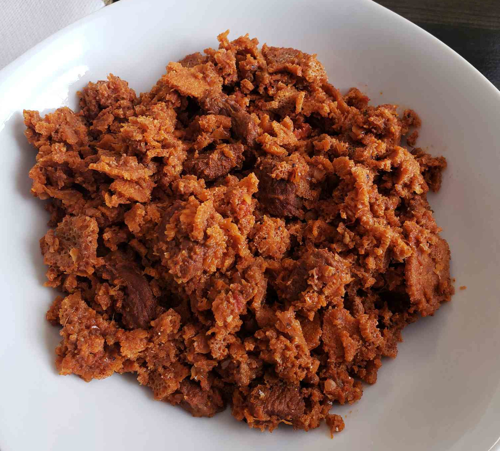

Firfir Recipe

Description
Firfir is an Ethiopian traditional Recipe. It is widely eaten in Ethiopia. It has a very unique taste. It is relatively easy and quick to make.
This dish can be served at any time of the day. It has a tendency to dehydrate your body. So, Be sure to have water available when you eat:). Aside from that it has zero fat content making it idea for weight loss.
Ingredients
- 1 Injera (Ethiopian Bread)
- 3 tablespoons Vegetable oil
- 2 table spoons Berbere (Ethiopian pepper)
- 1 teaspoon salt, or to taste
- Optional
- 1 Tomato, chopped
- 1 Onion, chopped
Steps
- Make the injera dry by using one of the following methods
- Expose it to the sun
- Put it in a microwave
- Put the (Tomato, Onion), Berbere, and Vegetable oil in a stockpot and stir over a medium heat
- Crush the dried Injera into chunks
- When you start to see steam on the stockpan drop the crushed Injera onto the pan
- Stir for about 30sec
- Serve it and Enjoy!